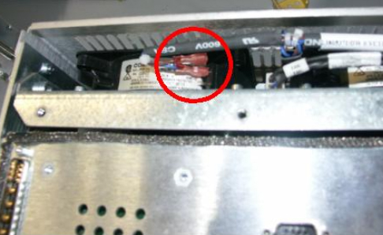
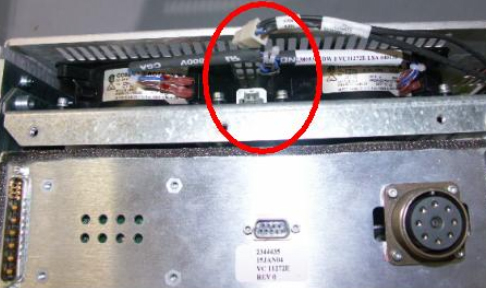
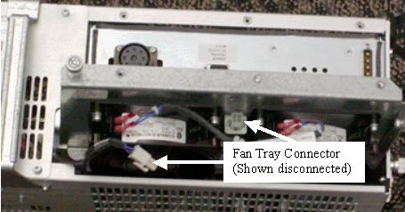
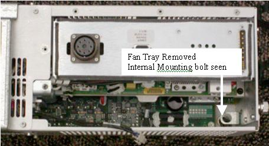
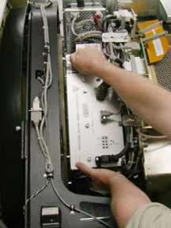

Operating Documentation
Direction 5224328-800, Rev# 5
Dir 5224328-800 LightSpeed 5.X HP60 Limited Access Service
Methods - Adv.
Operating Documentation |
| Required Persons | Preliminary Reqs | Procedure | Finalization |
|---|---|---|---|
| 1 (see Caution Statement) | Timing Not Applicable | 45 mins | 10 mins |
The GDAS-16 power supplies are contained in two chassis, with each chassis as the FRU. The two chassis' are: Digital and Analog power supplies. Both replacement procedures are basically the same. This procedure addresses the replacement of both the Digital and Analog chassis.
| Last Revised: | November 2004 |
| Item | Qty | Effectivity | Part# | Manufacturer | |
|---|---|---|---|---|---|
| Torque Wrench | 1 | - | - | - | |
| Standard FE Toolkit | 1 | - | - | - | |
| 12 “ 10 mm hex allen | 1 (part of system service kit) | - | - | - | |
| Item | Qty | Effectivity | Part# | Manufacturer |
|---|---|---|---|---|
| Tie-wraps | - | - | - |
| Item | Qty | Effectivity | Part# | Manufacturer | |
|---|---|---|---|---|---|
| DAS Analog or Digital power supply chassis | 1 (as required) | - | - | - | |
| ELECTROCUTION HAZARD. | |
| HIGH VOLTAGE PRESENT. | |
| use proper lockout / tagout procedures before replacing the components. |
| CRUSH HAZARD. | |
| UNEXPECTED GANTRY ROTATION CAN CAUSE SERIOUS INJURY. | |
| never service the gantry with the axial drive enabled. |
| Potential for injury to service personnel. | |
| Each power supply chassis is just under 30 pounds. | |
| Depending on your height, a step stool may be required to reach over the TGP for supply removal/installation. Use your judgement to determine if a second person may be required to assist in removal and installation. |
| Follow ALL required safety and PPE procedures customary for your organization when working on this product. | |
| Condition | Reference | Eff |
|---|---|---|
Do not remove both supplies together. If both supplies require replacement you must first swap one supply and then change the other. | - | - |
Only trained service personnel should service the GE CT Scanner. | - | - |
Perform the following check, if the scanner is shutting down intermittently during detailed Cals or high-kW scans (essentially when the inside of the gantry gets hot). Before replacing the Power Supply, make sure all the DAS cooling fans are all functioning normally (blowing air out). Check for continuous airflow. If airflow is not present, check the following:
If DAS Service action was recently performed, make sure the fan module power is plugged into the fan module (may have been unintentionally left unplugged during DAS Service), before replacing the Power Supply.
Illustration 1: Fan Terminals Unplugged

Illustration 2: Mate-N-Lok Cable Unplugged

If DAS Service action was not recently performed, use your hand to check for fan airflow at each fan.
Illustration 3: Airflow: Air blows OUT

Use hand to make sure air is blowing OUT of Power Supply box. It is possible a fan has failed and NOT the power Supply.
Position the table to its lowest position, fully out of the gantry.
Remove gantry covers as required.
Refer to Parts Replacement → Gantry → Enclosure → (Cover Removal Procedure).
| Always turn OFF the HVDC before the 120VAC. Turning OFF 120VAC power before HVDC power can result in equipment damage. | |
| Use proper lockout/tagout procedures before replacing components. | |
Turn OFF the Axial Enable and HVDC switches on the service switch panel.
Rotate the gantry to access the DAS power supply on the left side (same side as TGP) then turn off the 120VAC service switch.
Disconnect the harness over the supply you are replacing by loosening the captive screws of the harness brackets from the DAS back plate.
Disconnect the cables from the supply and neighboring components as necessary. See the following list for items to pay attention to.
Check on each end of the power supply for cables that may be mounted just out of sight on the ends. Most are secured using reusable cable clamps that are black and shown in Illustration 4. To open the cable clamps pull back on the small tab away from the end of the strap and push the strap back through the clamp.
Starting at the top, remove all of the cables from the power supply top, front side and bottom. For the digital supply, remove all of the cables attached to the back of the Right chassis backplane. For the Analog supply remove all the cables attached to the Center and Left chassis backplane.
There are cables on the end of the Digital power supply that must be removed. The suggested order of removal is: DMB plug, Fan Plug, DHCB plug, Collimator plug. These cables have connectors with tabs that also must be removed from the cable interface plate to remove the supply. To remove the molex connectors from the bulkhead after disconnecting the cable use a small flat screw driver to push down on the tab and pull the molex back to release the top then reach under the molex with the screw driver and push up on the bottom tab while pulling on the connector. It should pop out with both tabs released from the bulkhead. Use the DMB bracket thumb screws to detach it from the supply. Leave the cables attached to the DMB.
The Detector heater wires are small and may break with repeated bending. Use caution with this cable.
Black cable clamps are reusable ties. Do not cut them.
Illustration 4: GDAS-16 Cabling

Move the harness out of the way by gently pulling it up and over the DAS plate.
For the Digital supply, the cable from J2 on the JEDI inverter to J32 on the DAS right chassis backplane is not part of the main cable bundle but still tie-wrapped at a couple points. These tie-wraps may need to be disconnected to provide slack for the harness to be moved up and over the DAS plate.
| Burn injury possible. | |
| Power supply may be hot to touch. | |
| Use caution to prevent possible burn injury from hot surface contact. |
Remove the top cover of the power supply. Loosen the 3 captive screws holding the fan tray assembly (1 on top and 2 on the side). These are all combination heads of Torx and medium straight screwdriver. The Fan tray bottom screw on the side of the Digital power supply can be hard to get to. A 4mm hex wrench will fit this T30 Torx head to allow easier removal and tightening. Disconnect the Fan tray power plug and pull out the fan tray.
Illustration 5: Power supply showing fan tray

Illustration 6: Power supply with fan tray removed

| NOTE: | Be careful not to hit the home flag sensor board when removing supplies on the TGP side of the gantry. |
Loosen the lower two mounting bolts that are used to mount the power supply to the rotating base. After loosening the bolts, rotate the gantry to be able to access the upper two mounting bolts. Make sure the power supply has clearance from the stationary frame to still be lifted out of the gantry prior to locking gantry rotation. See Illustration 7.
Illustration 7: Power supply location example

| NOTE: | Above illustration is for location purposes only, cables and cover would have already been removed at this point. |
| CRUSH HAZARD. | |
| UNEXPECTED GANTRY ROTATION CAN CAUSE SERIOUS INJURY. | |
| Never service the gantry with the axial drive enabled. |
Lock the gantry rotation.
Loosen the upper two mounting bolts.
Remove the power supply assembly from the gantry by grabbing the handle in one hand and the lower side of supply in other, to steady it. The cable bulkhead on the side of the Digital supply can be used as a second handle.
When removing the Analog supply, the ORP chassis will need to be shifted out of the way by removing the two M12 bolts that hold the ORP chassis to the DAS plate.
If replacing the Digital supply, the cable bulkhead on the side will need to be transferred from the old supply to the new one.
| Failure to follow the process defined below may cause a mounting failure. | |
Insert the new power supply chassis reversing the steps above. Use the following process to Torque the power supply bolts:
| NOTE: | If you had to move the ORP chassis, torque the two M12 bolts to the same values shown for the supplies below. |
First Torque the bolts to 50% of the final value using the following settings.
Table 1: Initial Torque setting
| 33.2 N-m | 25 lb-ft | 294 lb-in | 338 kg-cm |
After all 4 bolts have been seated using the initial torque setting apply the final torque as shown in the following table.
Table 2: Final Torque values
| 66.4 N-m | 49 lb-ft | 588 lb-in | 677 kg-cm |
| The connector thumb screws of the GDAS-16 power supply and backplane connector harnesses WILL BREAK very easily if using a large diameter handle screwdriver. A gentle hand torque using a small diameter handle screwdriver is recommended. | |
Reconnect the cabling harness. Make sure all cable clamps are secure and any tie-wraps removed are reinstalled.
| POTENTIAL FOR SHOCK. | |
| VOLTAGE IS PRESENT. | |
| Failure to use an Insulated voltage adjustment "Tweaker" can result in personal injury and/or component damage. |
Adjust 5V supplies output, if necessary. Refer to GDAS-16 Power Supply Adjustment procedure for instructions.